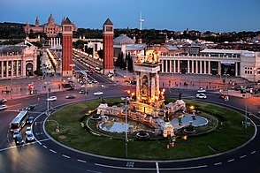
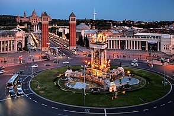
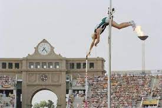
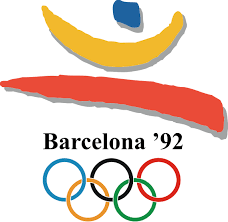
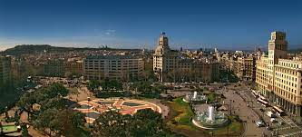
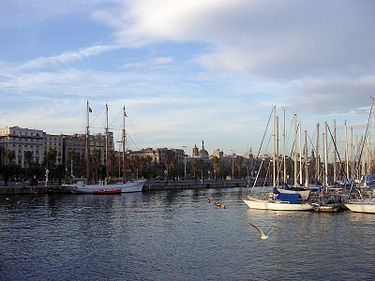

.jpg) 

Barselona je grad na obali severoistočne Španije. Glavni je i najveći grad autonomne zajednice Katalonije, kao i druga najnaseljenija opština Španije. Sa populacijom od 1,6 miliona u granicama grada. Nalazi se na obalama Mediterana na nekih 120 km od Pirineja i granice sa Francuskom, u dolini koja je okružena morem na istoku, planinskim vencom Sijera de Koljserola na zapadu, na jugu rekom Ljobregat, a na severu rekom Besos.Barselona je jedan od glavnih evropskih ekonomskih centara, sa jednom od glavnih mediteranskih luka a aerodrom u Barseloni je drugi po veličini u Španiji. Grad je takođe i bitna turistička destinacija i ima veoma bogato kulturno i istorijsko nasleđe, od kojih se posebno ističu arhitektonska dela Antonija Gaudija i Ljuisa Domeneka i Muntanera od kojih je UNESKO mnoge proglasio svetskom baštinom (Više o ovome na stranici Arhitektura ). U gradu se nalaze dva najprestižnija univerziteta u Španiji: Univerzitet Barselone i Univerzitet Pompeu Fabra. U gradu je sedište "Unije Mediterana".Barselona je bila domaćin važnim svetskim događajima koji su doprineli tome da postane veoma poznat i posećen grad. Najbitniji su Svetska izložba 1888. i 1929. godine, Letnje olimpijske igre 1992. godine, i Forum Kultura 2004.
 Delovi Barselone od turističkog značaja, kao što su ostaci rimske kulture, srednjovekovni grad i četvrti katalonskog modernizma, mogu se peške obilaziti. Karakteristična je urbanistička podela na blokove i dugačke avenije koje spajaju krajeve samoga grada. Najduža ulica je avenija Dijagonal koja preseca grad od severozapada pa sve do obale mora na jugoistoku. Jedno od najprometnijih mesta Barselone jeste šetalište La Rambla , koje se nalazi između Trga Katalonije , neurološkog centra grada i stare luke. Na njemu se nalaze novinarnice, prodavnice cveća i ptica, ljudi prerušeni u statue, kafići i restorani. Palata Virejna, pozorište Liseu i glavna pijaca Bokerija od turističkog su interesa. Šetalište završava u staroj luci trgom Vrata mira , gdje se nalazi statua Kristifora Kolumba. Ruka statue sa ispruženim prstom pokazuje suprotno od američkog kontinenta, usmjerena prema italijanskom gradu Đenovi, Kolumbovom rodnom gradu.
  Povratak na početak stranice